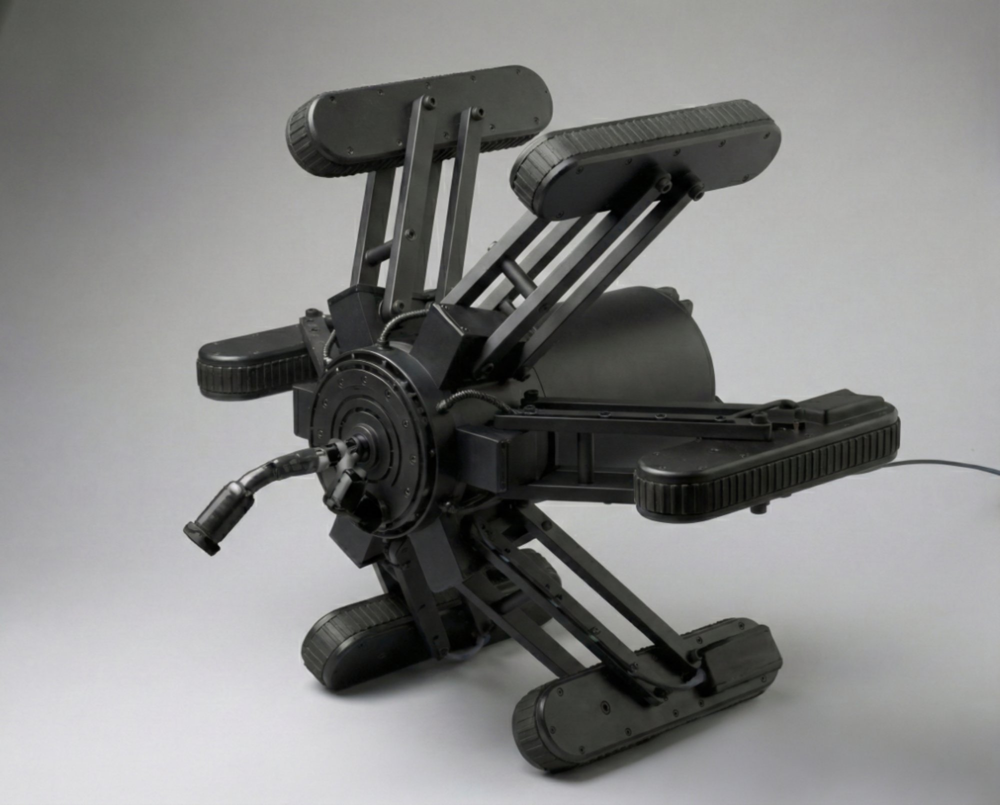
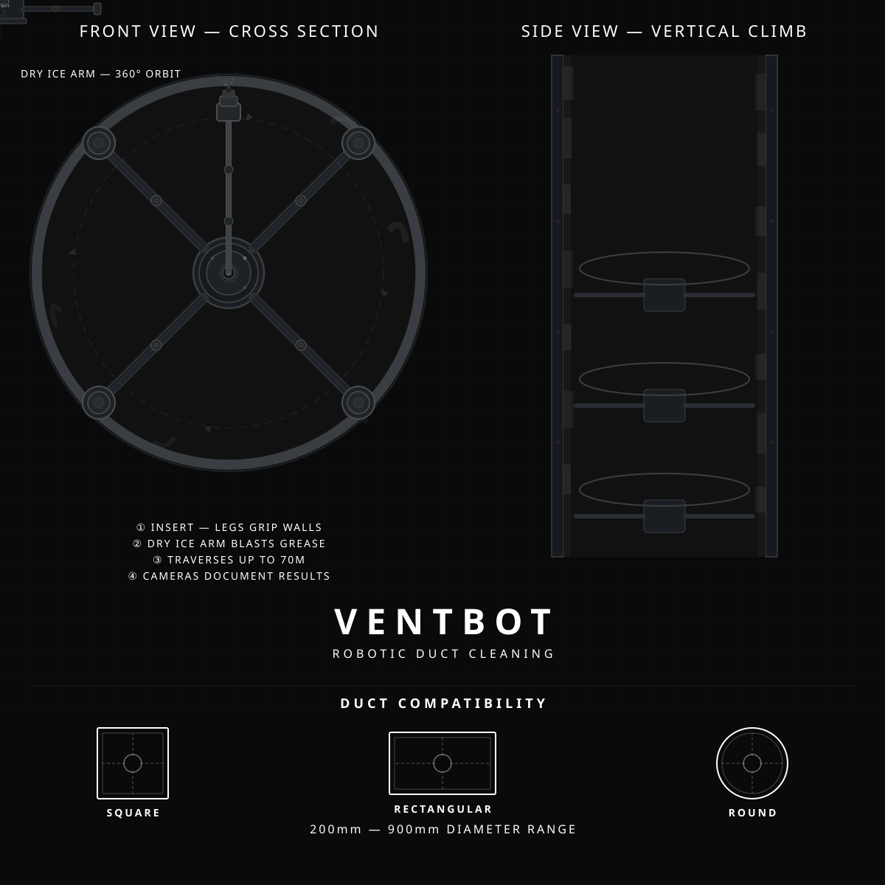
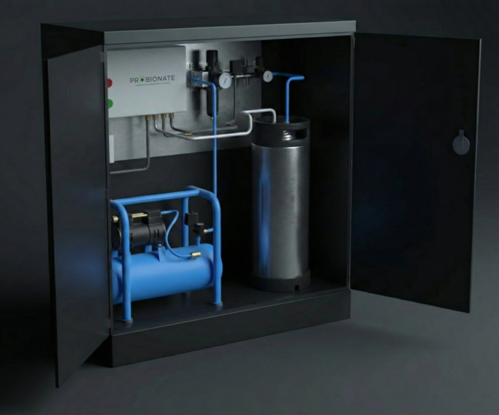
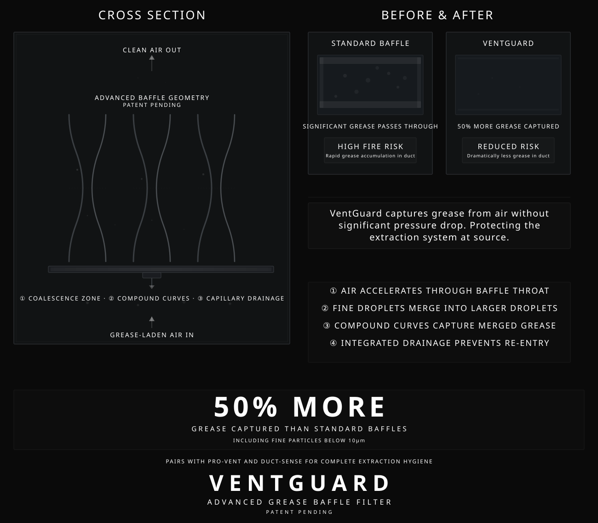
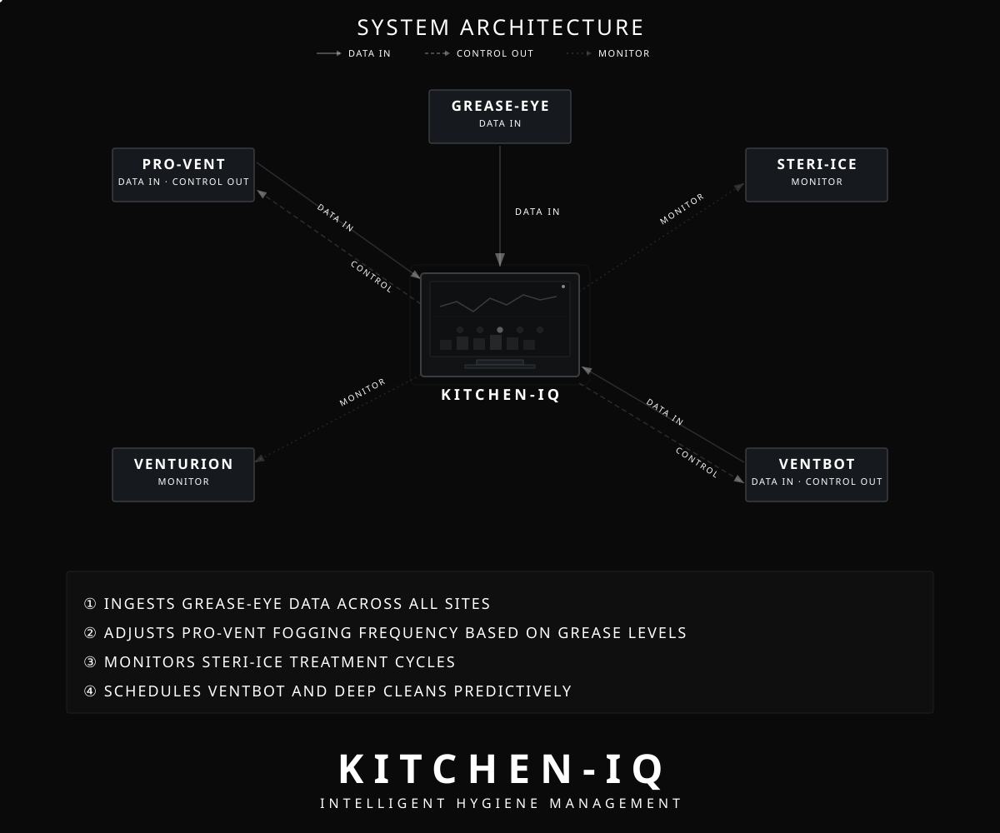
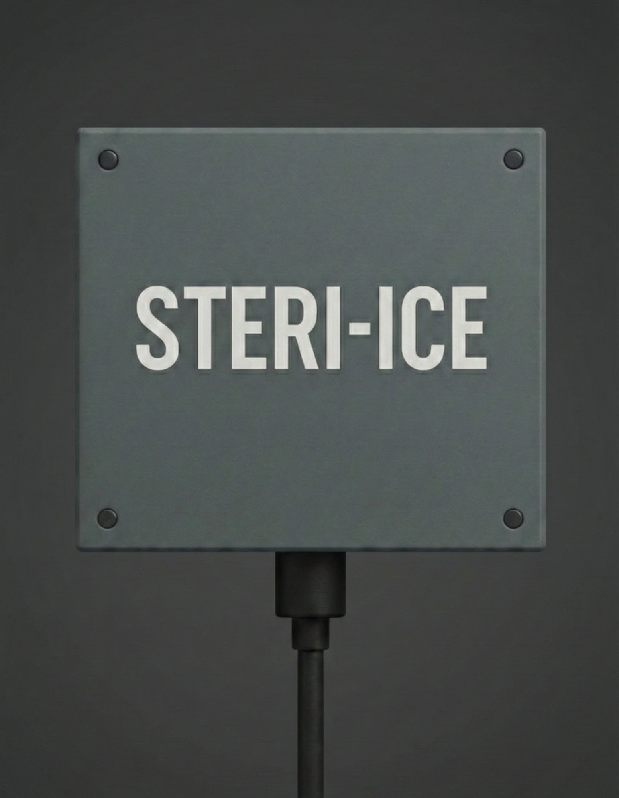
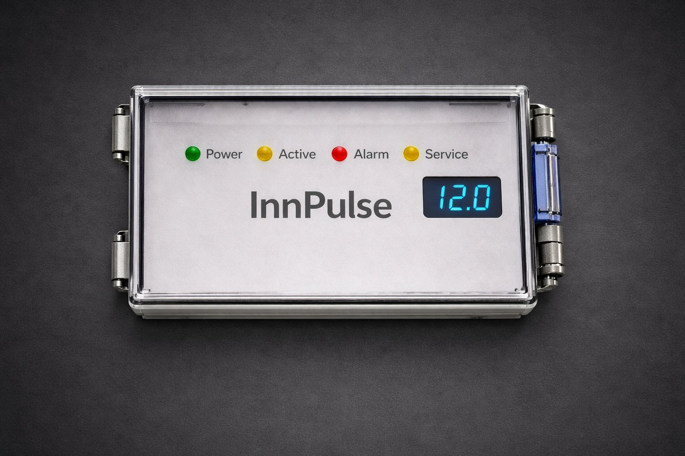
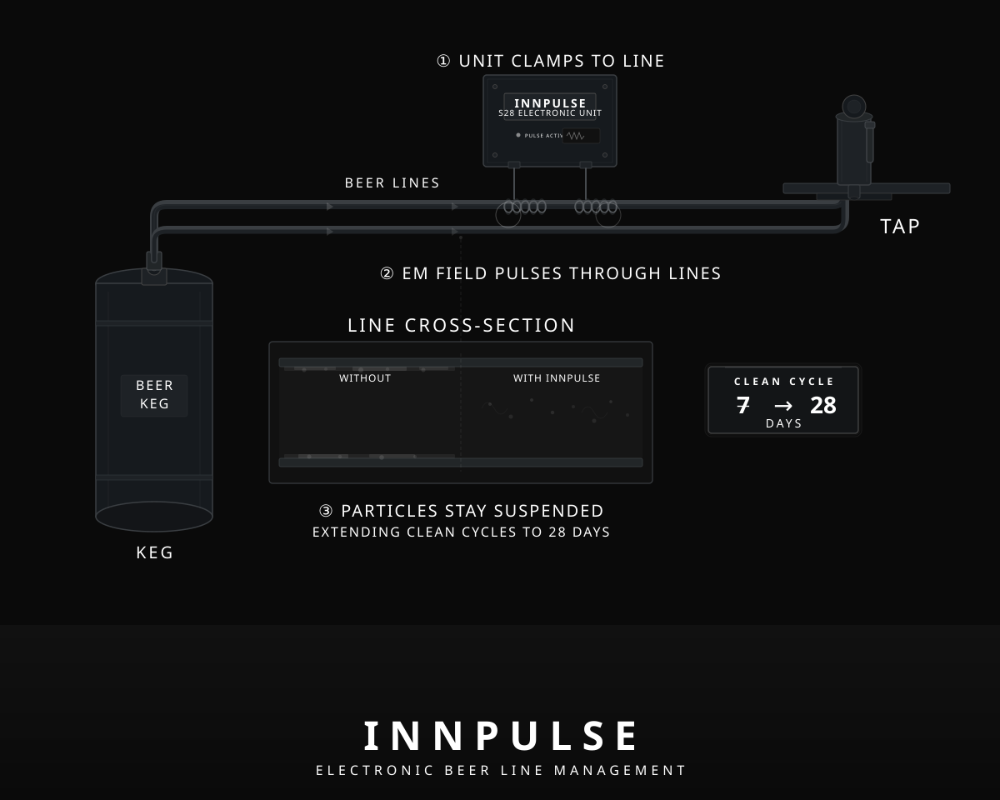
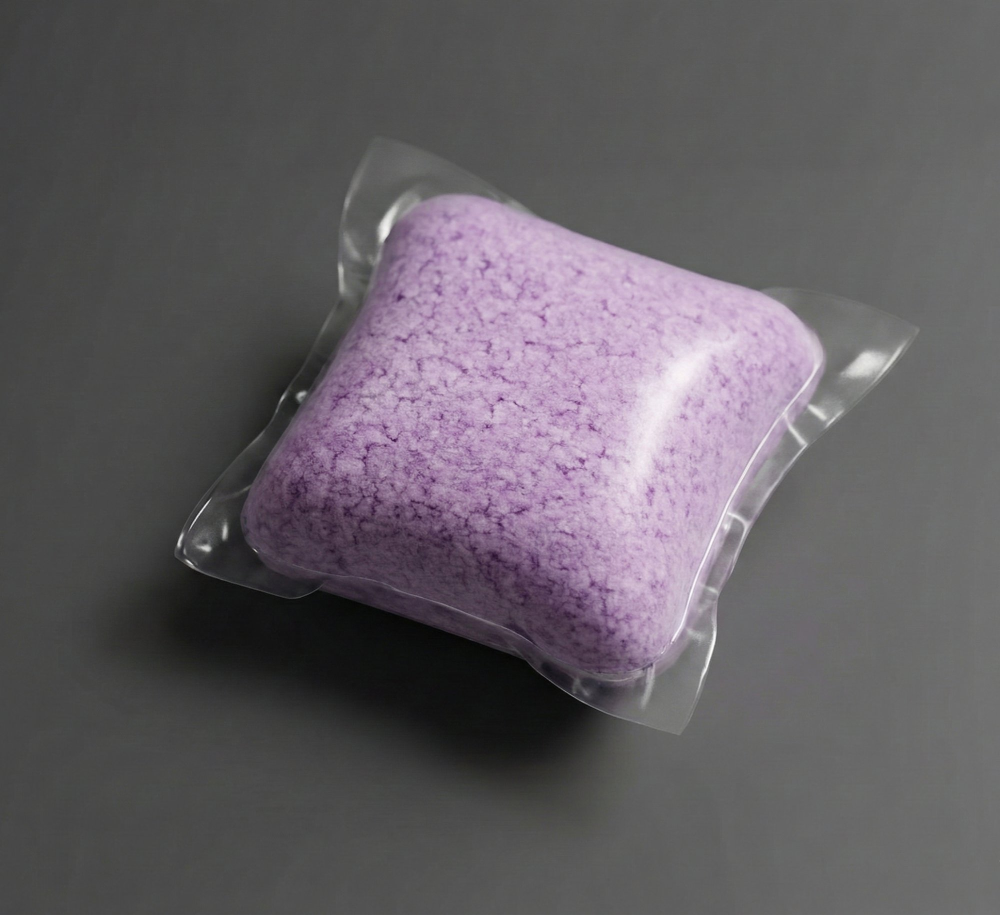
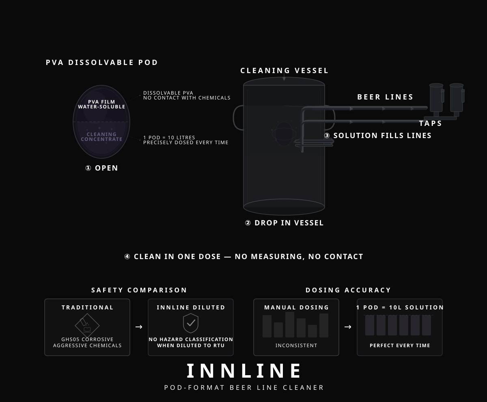

Innovative hygiene solutions for the F&B industry.
From fire risk in extraction systems to bacteria in ice machines and waste in beer lines — technology that replaces reactive, manual maintenance.
Trusted by the UK's largest pub and restaurant groups and leading hospitality maintenance specialists
Grease builds silently. Cleaning is infrequent, invasive, and expensive. Some ductwork is physically impossible to reach by hand. Most operators don't know the true state of their systems until an insurer flags it — or worse.
Vertical risers, sealed shafts, and complex bends accumulate grease that no human or magnetic scraper can access. These hidden sections carry the highest fire risk and have zero compliance documentation.
A deep clean restores the duct to bare metal — then grease starts building again the same day. The cycle repeats every 6 to 12 months with nothing working in between.
Operators schedule cleans by calendar, not by condition. Without data on actual grease levels, you're either cleaning too often and overspending, or not often enough and carrying risk you can't see.
Each product targets a specific problem in the food and beverage environment. Together, they replace fragmented, reactive maintenance with a connected system that cleans, prevents, measures, and manages.
An autonomous robot enters your ductwork and blasts every surface with dry ice at −78.5°C. Reaches 70 metres from a single entry point — cleaning areas no human can access. No scaffolding, no confined space entry, HD video proof of every clean.
Learn more →Installed inside the extraction system, Pro-Vent fogs a proprietary enzyme and probiotic solution through your ductwork every night. Bacteria colonise duct surfaces and continuously digest grease — cutting buildup by up to 50% between deep cleans.
Learn more →Compound-curve baffle geometry that captures 50% more grease than standard filters — including fine particles below 10µm. Intercepts grease at the canopy before it enters the duct. Patent pending.
Learn more →Optical sensors measure grease accumulation daily — predicting when cleaning is actually needed instead of guessing on a calendar. Feeds data to Kitchen-IQ for autonomous decision making.
Learn more →The central hub that connects every FBIS product into a single autonomous system. DuctSense feeds data in. Kitchen-IQ makes decisions. Products respond. One dashboard for your entire estate.
Learn more →A compact wall-mounted unit that continuously treats your ice machine water with ozone. Destroys biofilm, mould, and bacteria — achieving 99.9% pathogen reduction without chemicals or manual cleaning.
Learn more →Electromagnetic pulses keep yeast and bacteria suspended in your beer lines, extending clean cycles from weekly to every 28 days. 75% fewer cleans means less waste, less downtime, and consistently better pours.
Learn more →One dissolvable pod replaces measuring, mixing, and handling hazardous concentrates. Drop it in your cleaning vessel — 10 litres of ready solution, no GHS hazard classification when diluted, no dosing errors.
Learn more →Operating a multi-site estate? We'll show you how to bring every site into full compliance with less disruption and lower cost. Running a vent cleaning company? We'll give your team robotic and preventive capability overnight.
Dry ice pellets at −78.5°C convert grease and carbon to fine dust. No scaffolding. No confined space entry. No building modifications.
An autonomous robot enters the duct, grips the walls with four extending legs, and blasts every surface with a 360° orbiting spray arm. Front and rear cameras document every centimetre.


VentBot is inserted via an access panel. Four telescopic legs extend outward, gripping the duct walls with drive wheels. The robot traverses the entire system — vertically, horizontally, around bends — up to 70 metres from the entry point.
A spray arm orbits 360° around the inside circumference, blasting dry ice pellets at every surface. At −78.5°C, the thermal shock converts grease and carbon into fine dust. No water. No chemicals. No residue.
VentBot is a service, not a product you buy. Our technicians deploy alongside your existing vent hygiene partners, coordinating deep cleans across your entire estate.
Talk to us about deploying VentBot across your estate.
Bacteria and enzymes that digest grease biologically — fogged into your ductwork every night, automatically. Patented technology.
Spore-forming Bacillus bacteria colonise duct surfaces and continuously break down fat, protein, and starch into CO₂ and water.


Four ultrasonic nozzles disperse 600ml of probiotic liquid as ultra-fine fog (10–50 microns). Three strains of spore-forming Bacillus bacteria germinate on contact with grease, producing lipase, protease, and amylase enzymes.
Talk to us about deploying Pro-Vent across your estate.
Compound-curve baffle geometry that captures 50% more grease than standard filters — including fine particles below 10µm. Patent pending.
VentGuard intercepts grease at the point of entry into the extraction system. Coalescence zones force fine droplets to merge into larger ones. Compound curves capture them. Integrated capillary drainage prevents re-entry.

Standard baffles let fine grease particles pass straight through. VentGuard uses compound-curve geometry to accelerate air through a narrowing throat, forcing fine droplets to collide and merge. Larger droplets are captured by the curves and drained through an integrated capillary system.
Talk to us about VentGuard for your extraction systems.
Optical sensors that measure grease accumulation daily — predicting when cleaning is actually needed instead of guessing on a calendar. Patent pending.
Strategic sensor placement across canopy, vertical risers, and horizontal runs maps the entire extraction system. A proprietary FBIS algorithm tracks accumulation rates, predicts thresholds, and auto-books cleaning when needed.

DuctSense uses optical sensing to measure grease depth across your extraction system every day. The proprietary FBIS algorithm tracks accumulation rates, adjusts for seasonal cooking pattern changes, and predicts exactly when the cleaning threshold will be reached.
Talk to us about deploying DuctSense across your estate.
The central hub that connects every FBIS product into a single autonomous system. DuctSense feeds data in. Kitchen-IQ makes decisions. Products respond.
Kitchen-IQ receives real-time grease data from DuctSense, controls Pro-Vent dosing schedules, monitors Steri-Ice and VentGuard status, and coordinates VentBot deployment — all without human intervention.

Kitchen-IQ is the management layer that turns individual products into a coordinated system. It receives live sensor data from DuctSense, adjusts Pro-Vent fogging schedules based on actual grease levels, monitors VentGuard filter status, tracks Steri-Ice cycles, and schedules VentBot deep cleans — all autonomously.
Talk to us about the complete integrated platform.
Continuous ozone sanitisation keeps commercial ice machines free of mould and bacteria — extending cleaning intervals and protecting food safety.
A retrofit unit installed after a deep clean. Runs around the clock with no staff intervention. Annual ozone cell replacement.


Steri-Ice retrofits to any commercial ice machine. Once installed following a deep clean, it generates ozone continuously — eliminating mould and bacteria around the clock.
Talk to us about deploying Steri-Ice across your estate.
Electromagnetic technology prevents yeast and bacteria adhering to beer lines. Cleaning extends from 7 to 28 days. No caustic chemicals.
75% less wasted beer, water, and staff time. Paired with pH-neutral EcoZenze powder for a complete chemical-free solution.


InnPulse sends a pulsed electromagnetic field through beer lines, preventing yeast, bacteria, and proteins from aggregating. Paired with EcoZenze Activ — pH-neutral, biodegradable, 99.9999% kill rate.
Talk to us about deploying InnPulse across your estate.
One pod. One perfect dose. Zero contact with concentrated chemicals. Little to no COSHH requirements.
Drop it in, the PVA shell dissolves, and you get exactly 10 litres of cleaning solution every time. Eliminates dosing errors across your estate.


InnLine is a cleaning concentrate in a dissolvable PVA film. Drop the pod in, the film dissolves, and you get exactly 10 litres. No measuring. No chemical contact. No GHS hazard classification when diluted.
Talk to us about deploying InnLine across your estate.
FBIS exists to make commercial kitchens and hospitality venues safer, cleaner, and more efficient — by replacing outdated, reactive maintenance with intelligent, integrated technology.
Kitchen extraction systems are the single greatest fire risk in commercial food environments. Grease builds silently. Cleaning is infrequent, invasive, and expensive. We are the only company delivering a complete, integrated platform — from grease capture at the canopy to robotic cleaning deep in the ductwork, real-time measurement that replaces calendar guesswork, and an autonomous management layer that ties it all together. We don't just meet TR19 and NFPA 96. We go beyond them.
Our expertise spans extraction engineering, robotics, biotechnology, optical sensing, fluid dynamics, and beverage hygiene. We hold patents and patent-pending IP across multiple product lines, develop proprietary algorithms and formulations, and partner with the UK and Ireland's largest hospitality groups.
Patented and patent-pending technology developed in-house. From robotic dry ice systems to compound-curve baffle filters to real-time grease sensing — we don't rebrand other people's products.
Eight products designed to work as one system. Each solves a specific problem. Together, they cover the entire lifecycle — from capture to cleaning to measurement to management.
We deploy through the UK's leading vent hygiene specialists. They bring the relationships. We bring the technology.
Whether you operate a national estate or a specialist vent hygiene company.
Whether you operate a national estate or a specialist vent hygiene company, we should be talking.
Or email us directly at info@fbis-europe.com
Glasgow, Scotland
Food & Beverage Innovative Solutions Ltd (FBIS), registered in Scotland (SC872646). Registered office: 2nd Floor, 48 West George Street, Glasgow, G2 1BP.
When you submit our contact form, we collect: your name, company name, email address, phone number (if provided), enquiry type, and message. We also collect anonymous usage data via Google Analytics, including pages visited, time on site, device type, and approximate location.
Contact form submissions are used solely to respond to your enquiry. Analytics data is used to understand how visitors use our site and to improve our services. We do not sell, rent, or share your personal data with third parties for marketing purposes.
Contact form data is processed by Formspree Inc., acting as a data processor on our behalf. Submissions are forwarded to our business email and stored in Formspree's systems. You can request deletion of your data at any time by emailing info@fbis-europe.com.
We use the following cookies:
Essential: Cookie consent preference (stored locally, no personal data).
Analytics: Google Analytics cookies (_ga, _gid) to collect anonymous usage statistics. These are only set if you accept cookies.
Under UK GDPR, you have the right to: access your personal data, request correction or deletion, withdraw consent at any time, and lodge a complaint with the ICO (ico.org.uk). To exercise any of these rights, contact us at info@fbis-europe.com.
Contact form submissions are retained for 12 months from the date of enquiry, after which they are deleted. Analytics data is retained in anonymised form for 14 months.
This policy may be updated from time to time. Last updated: March 2026.